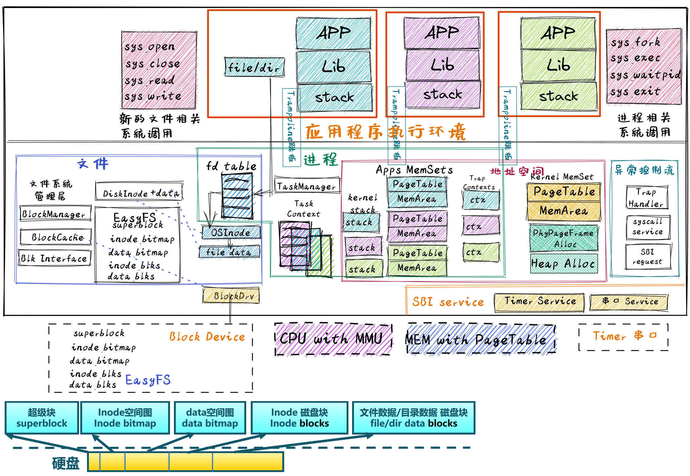

引言#
本章导读#
文件最早来自于计算机用户需要把数据持久保存在 持久存储设备 上的需求。由于放在内存中的数据在计算机关机或掉电后就会消失，所以应用程序要把内存中需要保存的数据放到 持久存储设备的数据块（比如磁盘的扇区等）中存起来。随着操作系统功能的增强，在操作系统的管理下，应用程序不用理解持久存储设备的硬件细节，而只需对 文件 这种持久存储数据的抽象进行读写就可以了，由操作系统中的文件系统和存储设备驱动程序一起来完成繁琐的持久存储设备的管理与读写。所以本章要完成的操作系统的第一个核心目标是： 让应用能够方便地把数据持久保存起来 。
大家不要被 持久存储设备 这个词给吓住了，这就是指计算机远古时代的卡片、纸带、磁芯、磁鼓、汞延迟线存储器等，以及到现在还在用的磁带、磁盘、硬盘、光盘、闪存、固态硬盘 (SSD, Solid-State Drive)等存储设备。我们可以把这些设备叫做 外存 。在本章之前，我们仅使用一种存储，就是内存（或称 RAM），内存是一种易失性存储。相比内存，外存的读写速度较慢，容量较大。但内存掉电后信息会丢失，而外存在掉电之后并不会丢失数据。因此，将需要持久保存的数据从内存写入到外存，或是从外存读入到内存是应用的一种重要需求。
注解
文件系统在UNIX操作系统有着特殊的地位，根据史料《UNIX: A History and a Memoir》记载，1969年，Ken Thompson（UNIX的作者）在贝尔实验室比较闲，写了PDP-7计算机的磁盘调度算法来提高磁盘的吞吐量。为了测试这个算法，他本来想写一个批量读写数据的测试程序。但写着写着，他在某一时刻发现，这个测试程序再扩展一下，就是一个文件，再扩展一下，就是一个操作系统了。他的自觉告诉他，他离实现一个操作系统仅有 三周之遥 。一周：写代码编辑器；一周：写汇编器；一周写shell程序，在写这些程序的同时，需要添加操作系统的功能（如 exec等系统调用）以支持这些应用。结果三周后，为测试磁盘调度算法性能的UNIX雏形诞生了。
注解
指明方向的舵手：Multics文件系统
计算机的第一种存储方式是图灵设计的图灵机中的纸带。在计算机最早出现的年代，纸质的穿孔卡成为了第一代的数据物理存储介质。 随着各种应用对持久存储大容量数据的需求，纸带和穿孔卡很快就被放弃，在计算机发展历史依次出现了磁带、磁盘、光盘、闪存等各种各样的外部存储器（也称外存、辅助存储器、辅存等）。与处理器可直接寻址访问的主存（也称内存）相比，处理器不能直接访问，速度慢1~2个数量级，容量多两个数量级以上，且便宜。应用软件访问这些存储设备上的数据很繁琐，效率也低，于是文件系统就登场了。这里介绍一下顺序存储介质（以磁带为代表）的文件系统和随机存储介质（以磁盘为代表）的文件系统。
磁带是一种顺序存储介质，磁带的历史早于计算机，它始于 1928 年，当时它被开发用于音频存储（就是录音带）。在1951 年，磁带首次用于在UNIVAC I计算机上存储数据。磁带的串行顺序访问特征对通用文件系统的创建和高效管理提出了挑战，磁带需要线性运动来缠绕和展开可能很长的介质卷轴。磁带的这种顺序运动可能需要几秒钟到几分钟才能将读/写磁头从磁带的一端移动到另一端。磁带文件系统用于存储在磁带上的文件目录和文件，为提高效率，它通常允许将文件目录与文件数据分布在一起，因此不需要耗时且重复的磁带往返线性运动来写入新数据。由于磁带容量很大，保存方便，且很便宜（磁带的成本比磁盘低一个数量级），所以到现在为止，磁带文件系统还在被需要存储大量数据的单位（如数据中心）使用。
1956 年，IBM发布了第一款硬盘驱动器，硬盘高速随机访问数据的能力使得它成为替代磁带的合理选择。在 Multics 之前，大多数操作系统一般提供特殊且复杂的文件系统来存储信息。这里的特殊和复杂性主要体现在操作系统对面向不同应用的文件数据格式的直接支持上。与当时的其他文件系统相比，Multics 文件系统不需要支持各种具体的文件数据格式，而是把文件数据看成是一个无格式的字节流，这样在一定程度上就简化了文件系统的设计。Multics操作系统的存储管理主要面向磁盘这种辅助存储器，文件只是一个字节序列。Multics操作系统第一次引入了层次文件系统的概念，即文件系统中的目录可以包含其他子目录，从而在理论和概念上描述了无限大的文件系统，并使得所有用户能够访问私人和共享文件。用户通过文件名来寻址文件并访问文件内容，这使得文件系统的基本结构独立于物理存储介质。文件系统可以动态加载和卸载，以便于数据存储备份等操作。可以说，Multics的这些设计理念（提出这些设计理念的论文出现在Multics操作系统完成的四年前）为UNIX和后续操作系统中基于文件的存储管理指明了方向。
眼中一切皆文件的UNIX文件系统
而Ken Thompson 在UNIX文件系统的设计和实现方面，采纳了Multics文件系统中的很多设计理念。UNIX 文件只是一个字节序列。文件内容的任何结构或组织仅由处理它的程序决定。UNIX文件系统本身并不关心文件的具体内容，这意味着任何程序都可以读写任何文件。这样就避免了操作系统对各种文件内容的解析，极大地简化了操作系统的设计与实现。同时UNIX提出了“一切皆文件”的设计理念，这使得你几乎可以想到的各种操作系统组件都可以通过文件系统中的文件来命名。除了文件自身外，设备、管道、甚至网络、进程、内存空间都可以用文件来表示和访问。这种命名的一致性简化了操作系统的概念模型，使操作系统对外的接口组织更简单、更模块化。基本的文件访问操作包括 open，read， write， close ，表示了访问一个文件最核心和基础的操作：打开文件、读文件内容、写文件内容和关闭文件。直到今天，原始 UNIX 文件系统中文件访问操作的语义几乎没有变化。
本章我们将实现一个简单的文件系统 – easyfs，能够对 持久存储设备 (Persistent Storage) 这种 I/O 资源进行管理。对于应用程序访问持久存储设备的需求，内核需要新增两种文件：常规文件和目录文件，它们均以文件系统所维护的 磁盘文件 形式被组织并保存在持久存储设备上。这样，就形成了具有强大UNIX操作系统基本功能的 “霸王龙” 1 操作系统。

实践体验#
获取本章代码：
$ git clone https://github.com/rcore-os/rCore-Tutorial-v3.git
$ cd rCore-Tutorial-v3
$ git checkout ch6
在 qemu 模拟器上运行本章代码：
$ cd os
$ make run # 编译后，最终执行如下命令模拟rv64 virt计算机运行：
......
$ qemu-system-riscv64 \
-machine virt \
-nographic \
-bios ../bootloader/rustsbi-qemu.bin \
-device loader,file=target/riscv64gc-unknown-none-elf/release/os.bin,addr=0x80200000 \
-drive file=../user/target/riscv64gc-unknown-none-elf/release/fs.img,if=none,format=raw,id=x0 \
-device virtio-blk-device,drive=x0,bus=virtio-mmio-bus.0
在执行 qemu-system-riscv64 的参数中，../user/target/riscv64gc-unknown-none-elf/release/fs.img 是包含应用程序集合的文件系统镜像，这个镜像是放在虚拟硬盘块设备 virtio-blk-device （在下一章会进一步介绍这种存储设备）中的。
内核初始化完成之后就会进入shell程序，在这里我们运行一下本章的测例 filetest_simple ：
>> filetest_simple
file_test passed!
Shell: Process 2 exited with code 0
>>
它会将 Hello, world! 输出到另一个文件 filea ，并读取里面的内容确认输出正确。我们也可以通过命令行工具 cat_filea 来更直观的查看 filea 中的内容：
>> cat_filea
Hello, world!
Shell: Process 2 exited with code 0
>>
本章代码树#
霸王龙操作系统 – FilesystemOS的总体结构如下图所示：
{kind=link}
通过上图，大致可以看出霸王龙操作系统 – FilesystemOS增加了对文件系统的支持，并对应用程序提供了文件访问相关的系统调用服务。在进程管理上，进一步扩展资源管理的范围，把打开的文件相关信息放到 fd table 数据结构中，纳入进程的管辖中，并以此为基础，提供 sys_open、sys_close、sys_read、sys_write 与访问文件相关的系统调用服务。在设备管理层面，增加了块设备驱动 – BlockDrv ，通过访问块设备数据来读写文件系统与文件的各种数据。文件系统 – EasyFS 成为 FilesystemOS的核心内核模块，完成文件与存储块之间的数据/地址映射关系，通过块设备驱动 BlockDrv 进行基于存储块的读写。其核心数据结构包括： Superblock（表示整个文件系统结构）、inode bitmap（表示存放inode磁盘块空闲情况的位图）、data bitmap（表示存放文件数据磁盘块空闲情况的位图）、inode blks（存放文件元数据的磁盘块）和data blks（存放文件数据的磁盘块）。EasyFS中的块缓存管理器 BlockManager 在内存中管理有限个 BlockCache 磁盘块缓存，并通过Blk Interface(与块设备驱动对接的读写操作接口）与BlockDrv 块设备驱动程序进行互操作。
位于 ch6 分支上的霸王龙操作系统 - FilesystemOS的源代码如下所示：
1./os/src
2Rust 32 Files 2893 Lines
3Assembly 3 Files 88 Lines
4./easyfs/src
5Rust 7 Files 908 Lines
6├── bootloader
7│ └── rustsbi-qemu.bin
8├── Dockerfile
9├── easy-fs(新增：从内核中独立出来的一个简单的文件系统 EasyFileSystem 的实现)
10│ ├── Cargo.toml
11│ └── src
12│ ├── bitmap.rs(位图抽象)
13│ ├── block_cache.rs(块缓存层，将块设备中的部分块缓存在内存中)
14│ ├── block_dev.rs(声明块设备抽象接口 BlockDevice，需要库的使用者提供其实现)
15│ ├── efs.rs(实现整个 EasyFileSystem 的磁盘布局)
16│ ├── layout.rs(一些保存在磁盘上的数据结构的内存布局)
17│ ├── lib.rs
18│ └── vfs.rs(提供虚拟文件系统的核心抽象，即索引节点 Inode)
19├── easy-fs-fuse(新增：将当前 OS 上的应用可执行文件按照 easy-fs 的格式进行打包)
20│ ├── Cargo.toml
21│ └── src
22│ └── main.rs
23├── LICENSE
24├── Makefile
25├── os
26│ ├── build.rs
27│ ├── Cargo.toml(修改：新增 Qemu 和 K210 两个平台的块设备驱动依赖 crate)
28│ ├── Makefile(修改：新增文件系统的构建流程)
29│ └── src
30│ ├── config.rs(修改：新增访问块设备所需的一些 MMIO 配置)
31│ ├── console.rs
32│ ├── drivers(修改：新增 Qemu 和 K210 两个平台的块设备驱动)
33│ │ ├── block
34│ │ │ ├── mod.rs(将不同平台上的块设备全局实例化为 BLOCK_DEVICE 提供给其他模块使用)
35│ │ │ ├── sdcard.rs(K210 平台上的 microSD 块设备, Qemu不会用)
36│ │ │ └── virtio_blk.rs(Qemu 平台的 virtio-blk 块设备)
37│ │ └── mod.rs
38│ ├── entry.asm
39│ ├── fs(修改：在文件系统中新增常规文件的支持)
40│ │ ├── inode.rs(新增：将 easy-fs 提供的 Inode 抽象封装为内核看到的 OSInode
41│ │ │ 并实现 fs 子模块的 File Trait)
42│ │ ├── mod.rs
43│ │ ├── pipe.rs
44│ │ └── stdio.rs
45│ ├── lang_items.rs
46│ ├── link_app.S
47│ ├── linker-qemu.ld
48│ ├── loader.rs(移除：应用加载器 loader 子模块，本章开始从文件系统中加载应用)
49│ ├── main.rs
50│ ├── mm
51│ │ ├── address.rs
52│ │ ├── frame_allocator.rs
53│ │ ├── heap_allocator.rs
54│ │ ├── memory_set.rs(修改：在创建地址空间的时候插入 MMIO 虚拟页面)
55│ │ ├── mod.rs
56│ │ └── page_table.rs(新增：应用地址空间的缓冲区抽象 UserBuffer 及其迭代器实现)
57│ ├── sbi.rs
58│ ├── syscall
59│ │ ├── fs.rs(修改：新增 sys_open)
60│ │ ├── mod.rs
61│ │ └── process.rs(修改：sys_exec 改为从文件系统中加载 ELF，并支持命令行参数)
62│ ├── task
63│ │ ├── context.rs
64│ │ ├── manager.rs
65│ │ ├── mod.rs(修改初始进程 INITPROC 的初始化)
66│ │ ├── pid.rs
67│ │ ├── processor.rs
68│ │ ├── switch.rs
69│ │ ├── switch.S
70│ │ └── task.rs
71│ ├── timer.rs
72│ └── trap
73│ ├── context.rs
74│ ├── mod.rs
75│ └── trap.S
76├── README.md
77├── rust-toolchain
78└── user
79 ├── Cargo.lock
80 ├── Cargo.toml
81 ├── Makefile
82 └── src
83 ├── bin
84 │ ├── cat_filea.rs(新增：显示文件filea的内容)
85 │ ├── cmdline_args.rs(新增)
86 │ ├── exit.rs
87 │ ├── fantastic_text.rs
88 │ ├── filetest_simple.rs(新增：创建文件filea并读取它的内容 )
89 │ ├── forktest2.rs
90 │ ├── forktest.rs
91 │ ├── forktest_simple.rs
92 │ ├── forktree.rs
93 │ ├── hello_world.rs
94 │ ├── initproc.rs
95 │ ├── matrix.rs
96 │ ├── pipe_large_test.rs
97 │ ├── pipetest.rs
98 │ ├── run_pipe_test.rs
99 │ ├── sleep.rs
100 │ ├── sleep_simple.rs
101 │ ├── stack_overflow.rs
102 │ ├── user_shell.rs
103 │ ├── usertests.rs
104 │ └── yield.rs
105 ├── console.rs
106 ├── lang_items.rs
107 ├── lib.rs(修改：支持命令行参数解析)
108 ├── linker.ld
109 └── syscall.rs(修改：新增 sys_open)
本章代码导读#
本章涉及的代码量相对较多，且与进程执行相关的管理还有直接的关系。其实我们是参考经典的UNIX基于索引结构的文件系统，设计了一个简化的有一级目录并支持 open，read， write， close ，即创建/打开/读写/关闭文件一系列操作的文件系统。这里简要介绍一下在内核中添加文件系统的大致开发过程。
第一步：是能够写出与文件访问相关的应用
这里是参考了Linux的创建/打开/读写/关闭文件的系统调用接口，力图实现一个 简化版的文件系统模型 。在用户态我们只需要遵从相关系统调用的接口约定，在用户库里完成对应的封装即可。这一过程我们在前面的章节中已经重复过多次，同学应当对其比较熟悉。其中最为关键的是系统调用可以参考 sys_open 语义介绍 ，此外我们还给出了 测例代码解读 。
第二步：就是要实现 easyfs 文件系统
由于 Rust 语言的特点，我们可以在用户态实现 easyfs 文件系统，并在用户态完成文件系统功能的基本测试并基本验证其实现正确性之后，就可以放心的将该模块嵌入到操作系统内核中。当然，有了文件系统的具体实现，还需要对上一章的操作系统内核进行扩展，实现与 easyfs 文件系统对接的接口，这样才可以让操作系统拥有一个简单可用的文件系统。这样内核就可以支持具有文件读写功能的复杂应用。当内核进一步支持应用的命令行参数后，就可以进一步提升应用程序的灵活性，让应用的开发和调试变得更为轻松。
easyfs 文件系统的整体架构自下而上可分为五层：
磁盘块设备接口层：读写磁盘块设备的trait接口
块缓存层：位于内存的磁盘块数据缓存
磁盘数据结构层：表示磁盘文件系统的数据结构
磁盘块管理器层：实现对磁盘文件系统的管理
索引节点层：实现文件创建/文件打开/文件读写等操作
它的最底层就是对块设备的访问操作接口。在 easy-fs/src/block_dev.rs 中，可以看到 BlockDevice trait ，它代表了一个抽象块设备的接口，该 trait 仅需求两个函数 read_block 和 write_block ，分别代表将数据从块设备读到内存缓冲区中，或者将数据从内存缓冲区写回到块设备中，数据需要以块为单位进行读写。easy-fs 库的使用者（如操作系统内核）需要实现块设备驱动程序，并实现 BlockDevice trait 以提供给 easy-fs 库使用，这样 easy-fs 库就与一个具体的执行环境对接起来了。至于为什么块设备层位于 easy-fs 的最底层，那是因为文件系统仅仅是在块设备上存储的稍微复杂一点的数据。无论对文件系统的操作如何复杂，从块设备的角度看，这些操作终究可以被分解成若干次基本的块读写操作。
尽管在操作系统的最底层（即块设备驱动程序）已经有了对块设备的读写能力，但从编程方便/正确性和读写性能的角度来看，仅有块读写这么基础的底层接口是不足以实现高效的文件系统。比如，某应用将一个块的内容读到内存缓冲区，对缓冲区进行修改，并尚未写回块设备时，如果另外一个应用再次将该块的内容读到另一个缓冲区，而不是使用已有的缓冲区，这将会造成数据不一致问题。此外还有可能增加很多不必要的块读写次数，大幅降低文件系统的性能。因此，通过程序自动而非程序员手动地对块缓冲区进行统一管理也就很必要了，该机制被我们抽象为 easy-fs 自底向上的第二层，即块缓存层。在 easy-fs/src/block_cache.rs 中， BlockCache 代表一个被我们管理起来的块缓冲区，它包含块数据内容以及块的编号等信息。当它被创建的时候，将触发一次 read_block 将数据从块设备读到它的缓冲区中。接下来只要它驻留在内存中，便可保证对于同一个块的所有操作都会直接在它的缓冲区中进行而无需额外的 read_block 。块缓存管理器 BlockManager 在内存中管理有限个 BlockCache 并实现了类似 FIFO 的缓存替换算法，当一个块缓存被换出的时候视情况可能调用 write_block 将缓冲区数据写回块设备。总之，块缓存层对上提供 get_block_cache 接口来屏蔽掉相关细节，从而可以向上层子模块提供透明读写数据块的服务。
有了块缓存，我们就可以在内存中方便地处理easyfs文件系统在磁盘上的各种数据了，这就是第三层文件系统的磁盘数据结构。easyfs文件系统中的所有需要持久保存的数据都会放到磁盘上，这包括了管理这个文件系统的 超级块 (Super Block)，管理空闲磁盘块的 索引节点位图区 和 数据块位图区 ，以及管理文件的 索引节点区 和 放置文件数据的 数据块区 组成。
easyfs文件系统中管理这些磁盘数据的控制逻辑主要集中在 磁盘块管理器 中，这是文件系统的第四层。对于文件系统管理而言，其核心是 EasyFileSystem 数据结构及其关键成员函数：
EasyFileSystem.create：创建文件系统
EasyFileSystem.open：打开文件系统
EasyFileSystem.alloc_inode：分配inode （dealloc_inode未实现，所以还不能删除文件）
EasyFileSystem.alloc_data：分配数据块
EasyFileSystem.dealloc_data：回收数据块
对于单个文件的管理和读写的控制逻辑主要是 索引节点（文件控制块） 来完成，这是文件系统的第五层，其核心是 Inode 数据结构及其关键成员函数：
Inode.new：在磁盘上的文件系统中创建一个inode
Inode.find：根据文件名查找对应的磁盘上的inode
Inode.create：在根目录下创建一个文件
Inode.read_at：根据inode找到文件数据所在的磁盘数据块，并读到内存中
Inode.write_at：根据inode找到文件数据所在的磁盘数据块，把内存中数据写入到磁盘数据块中
上述五层就构成了easyfs文件系统的整个内容。我们可以把easyfs文件系统看成是一个库，被应用程序调用。而 easy-fs-fuse 这个应用就通过调用easyfs文件系统库中各种函数，并作用在用Linux上的文件模拟的一个虚拟块设备，就可以在这个虚拟块设备上进行各种文件操作和文件系统操作，从而创建一个easyfs文件系统。
第三步：把easyfs文件系统加入内核中
这还需要做两件事情，第一件是在Qemu模拟的 virtio 块设备上实现块设备驱动程序 os/src/drivers/block/virtio_blk.rs 。由于我们可以直接使用 virtio-drivers crate中的块设备驱动，所以只要提供这个块设备驱动所需要的内存申请与释放以及虚实地址转换的4个函数就可以了。而我们之前操作系统中的虚存管理实现中，已经有这些函数，这使得块设备驱动程序很简单，且具体实现细节都被 virtio-drivers crate封装好了。当然，我们也可把easfys文件系统烧写到K210开发板的存储卡中。
第二件事情是把文件访问相关的系统调用与easyfs文件系统连接起来。在easfs文件系统中是没有进程的概念的。而进程是程序运行过程中访问资源的管理实体，而之前的进程没有管理文件这种资源。 为此我们需要扩展进程的管理范围，把文件也纳入到进程的管理之中。 由于我们希望多个进程都能访问文件，这意味着文件有着共享的天然属性，这样自然就有了``open/close/read/write``这样的系统调用，便于进程通过互斥或共享方式访问文件。
内核中的进程看到的文件应该是一个便于访问的Inode，这就要对 easy-fs crate 提供的 Inode 结构进一步封装，形成 OSInode 结构，以表示进程中一个打开的常规文件。文件的抽象 Trait File 声明在 os/src/fs/mod.rs 中，它提供了 read/write 两个接口，可以将数据写入应用缓冲区抽象 UserBuffer ，或者从应用缓冲区读取数据。应用缓冲区抽象类型 UserBuffer 来自 os/src/mm/page_table.rs 中，它将 translated_byte_buffer 得到的 Vec<&'static mut [u8]> 进一步包装，不仅保留了原有的分段读写能力，还可以将其转化为一个迭代器逐字节进行读写。
而进程为了进一步管理多个文件，需要扩展文件描述符表。这样进程通过系统调用打开一个文件后，会将文件加入到自身的文件描述符表中，并进一步通过文件描述符（也就是某个特定文件在自身文件描述符表中的下标）来读写该文件（ 即``OSInode`` 结构）。
在具体实现上，在进程控制块 TaskControlBlock 中需要加入文件描述符表字段 fd_table ，可以看到它是一个向量，里面保存了若干实现了 File Trait 的文件，由于采用Rust的 Trait Object 动态分发，文件的类型可能各不相同。 os/src/syscall/fs.rs 的 sys_read/write 两个读写文件的系统调用需要访问当前进程的文件描述符表，用应用传入内核的文件描述符来索引对应的已打开文件，并调用 File Trait 的 read/write 接口； sys_close 这可以关闭一个文件。调用 TaskControlBlock 的 alloc_fd 方法可以在文件描述符表中分配一个文件描述符。进程控制块的其他操作也需要考虑到新增的文件描述符表字段的影响，如 TaskControlBlock::new 的时候需要对 fd_table 进行初始化， TaskControlBlock::fork 中则需要将父进程的 fd_table 复制一份给子进程。
对于应用程序而言，它理解的磁盘数据是常规的文件和目录，不是 OSInode 这样相对复杂的结构。其实常规文件对应的 OSInode 是操作系统内核中的文件控制块数据结构的实例，它实现了 File Trait 定义的函数接口。这些 OSInode 实例会放入到进程文件描述符表中，并通过 sys_read/write 系统调用来完成读写文件的服务。这样就建立了文件与 OSInode 的对应关系，通过上面描述的三个开发步骤将形成包含文件系统的操作系统内核，可给应用提供基于文件的系统调用服务。
- 1
霸王龙是最广为人知的恐龙，生存于约6850万年到6500万年的白垩纪最末期， 位于白垩纪晚期的食物链顶端。